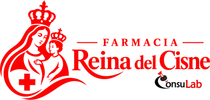

Resultado observado
Farmacia Reina del Cisne · Reto 2
Auditorías del proyecto MVC
Elige una prueba para recorrer sus pasos y ver el resultado registrado.

Abrir farmacia ↗Farmacia Reina del Cisne · Reto 2
Elige una prueba para recorrer sus pasos y ver el resultado registrado.